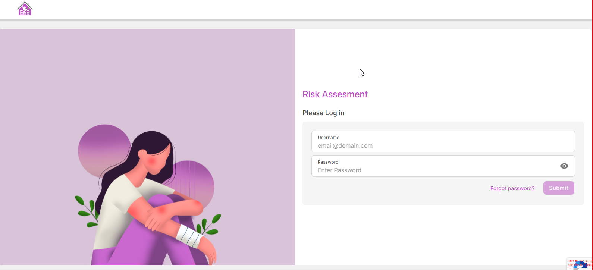

<link rel="stylesheet" href="../css/styles.css">
 
<main>
        <h2>Login Screen</h2>
        <p>
            Welcome to the Risk Assessment System. Please log in to access your account and manage your assessment<br>
            The user enters a valid URL to launch the application:
            <a target="_blank" href=https://happy-grass-02e46c50f.6.azurestaticapps.net/loginPage>Login login</a> <br>
            The user must enter a working email address and password in order to access the Risk Assessment module.<br>
            The format of the emailid must be valid for example : "testnfsuser@gmail.com".<br>
            The password should contain at least eight characters, including special and alphanumeric characters.<br>
            The user will receive a validation alert if any entries are deemed invalid.<br>
            The user will go to the Risk Assessment page to take the exam following a successful attempt.
        </p>
         
    
</main>

